1
How Embedding Care Standards Into the EHR
Empowers Clinical Variation Reduction
Session #3, February 12, 2019
John Kontor, MD | Scott Weingarten, MD, MPH
2
Optum®is a licensed reseller of Stanson Health, including its Choosing
Wisely®alert content evaluated in this study. Cedars-Sinai was the
major shareholder of Stanson Health, and Cedars-Sinai employed the
company’s founder Scott Weingarten, Cedars-Sinai, as Chief Clinical
Transformation Officer at the time of the study. Scott Weingarten has
served as CEO of Stanson.
Conflict of interest
Scott Weingarten, MD, MPH
Consultant to the CEO
Cedars-Sinai Health System
Professor of Medicine
3
Today’s presenters
JOHN KONTOR, MD
Practice Lead
Provider Technology Services
Optum
kontorj@advisory.com
SCOTT WEINGARTEN, MD, MPH
Consultant to CEO
Professor of Medicine
Cedars-Sinai Health System
CEO | Stanson
scott.weingarten@cshs.org
4
1. The opportunity: addressing unwarranted care variation
2. How Cedars-Sinai embedded guidance into workflows
3. Overview of Choosing Wisely®Clinical Decision Support
Adherence and Associated Inpatient Outcomes1
4. What clinical decision support (CDS) empowered pathways
could mean for health care
Agenda
1. https://www.ajmc.com

5
•Recognize how Cedars-Sinai Health System implemented 18
high-volume alerts and measured their impact across 26,424
alerted inpatient encounters between October 2013 and July
2016
•Identify the association between adherence to multiple
evidence-based guidelines delivered via clinical decision
support and changes in clinical and financial outcomes
•Discuss implications of broader and more comprehensive
CDS adoption to address unwarranted care variation across
the patient journey
Learning objectives

6
The opportunity: Addressing
unwarranted care variation
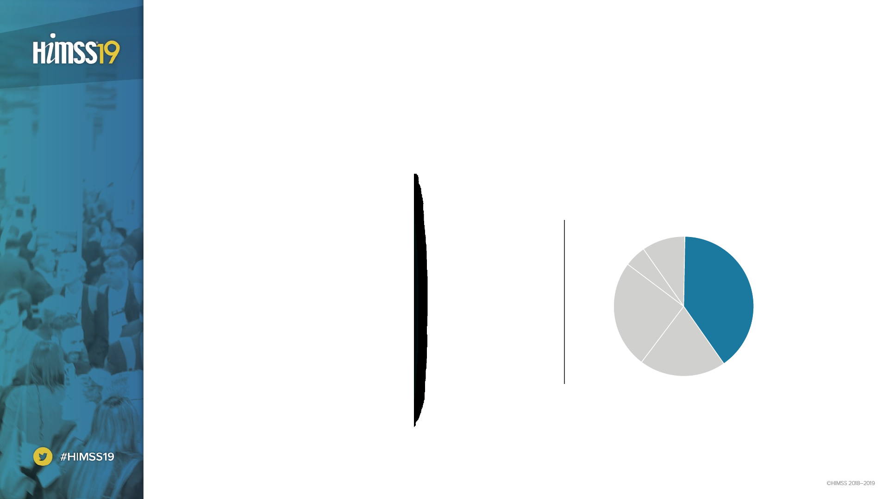
7
Clinical standardization
Still a large, untapped opportunity
CFOs’ estimated
breakdown of cost
savings opportunities
N = 451
20%
25%
5%
10%
40%
Clinical
standardization
Administrative
overhead
Capital
expenses
Labor costs
Supply
costs
Unwarranted
clinical variation
Differences in care that cannot be
explained by type or severity of illness
or patient preference
Root cause of:
•Preventable harm and poorer
outcomes due to inappropriate
or less effective care
•Avoidable cost due to fragmented
care processes and inefficient
resource use
1. Health Care Advisory Board meta-analysis of hospital and system CFOs, 2015.
Health systems can no longer afford to ignore unwarranted clinical variation
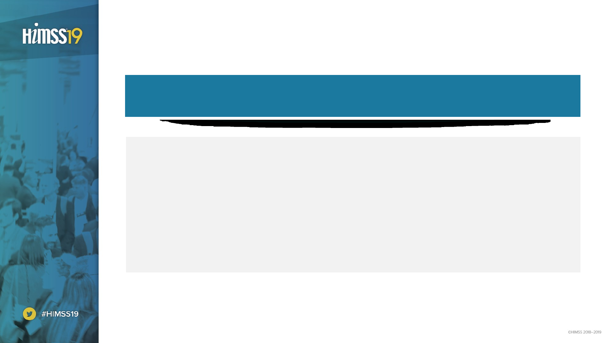
8
“Our mixed results highlight the need for interventions
beyond the current level of promotion, such as data feedback,
physician communication training, systems interventions
(e.g., clinical decision support in electronic medical records),
clinician scorecards, patient-focused strategies and financial
incentives.”
—Rosenburg et al., JAMA 2015
Agreement, education not sufficient
Source: Early Trends Among Seven Recommendations From the Choosing Wisely Campaign. Alan Rosenberg, MD; Abiy Agiro, PhD; Marc Gottlieb, MPA; John Barron, PharmD; Peter Brady, MBA; Ying Liu, MS; Cindy Li, MSc;
Andrea DeVries, PhD JAMA Intern Med. doi:10.1001/jamainternmed.2015.5441. Published online October 12, 2015.
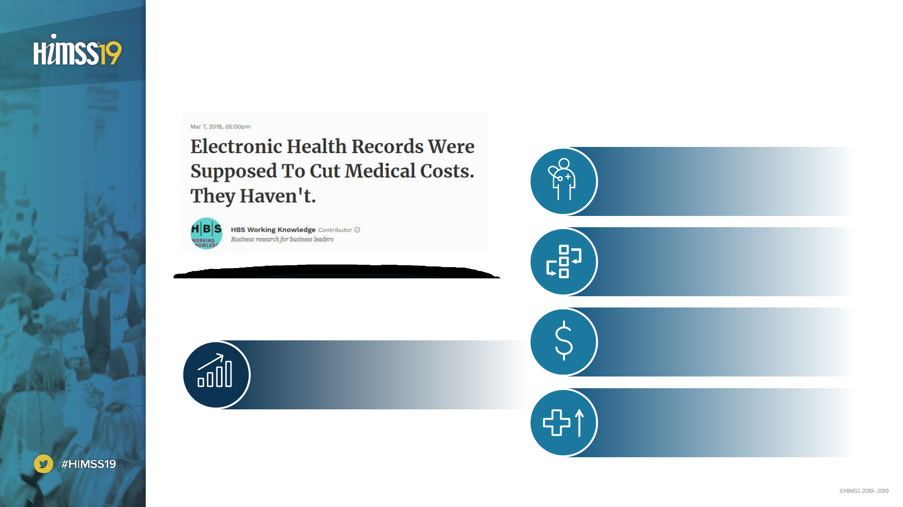
9
Improve the value of care
Source: NEJM 2013;369:2551–7; Berwick DM, et al. JAMA. 2012;307:1513–6.
Technology value
10% of health care, or $158B–$226B,
estimated waste in U.S health care
due to overtreatment
80% to 90% of U.S. health care costs
are influenced by physician’s decisions
Patient care improvement 112 times
more effective when guidance is
in workflow
Physicians and hospitals seeking
ROI from EHRs
Automation value
Quality improvement and utilization management
Costs and productivity in health care
can be improved through technology
and automation
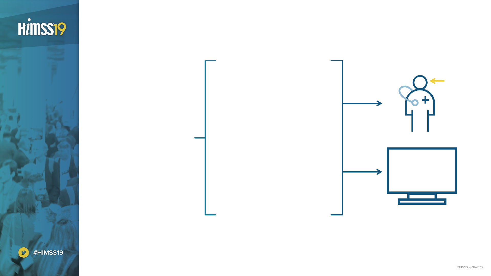
10
Information challenges
Medical research
funding
NIH research:
$37 billion in 2018
Global medical
research:
$140+ billion/year
Research output
•20,000 biomedical journals
•6,000 articles per day
•One article every 26 seconds
•20,000 new lab tests
in the next 5 years
•Doubling time of medical
information 73 days in 2020
C L I N I C A L D E C I S I O N
S U P P O R T
11
The Choosing Wisely initiative
A provider-driven effort
The goal of Choosing Wisely is
to promote conversations between
clinicians and patients by helping
patients choose care that is:
•Supported by evidence
•Not duplicative of other tests
or procedures already received
•Free from harm
•Truly necessary
Choosing Wisely is an initiative of the
ABIM Foundation that seeks to advance a
national dialogue on avoiding unnecessary
medical tests, treatments and procedures.
Source: http://www.choosingwisely.org/
12
Obstacles to Choosing Wisely success
Ideally, an EHR infrastructure
could overcome these obstacles
and provide real-time computerized
clinical decision support to inform
health care providers when their
care deviates from evidence-
based guidelines.
Provider difficulty
interpreting guidelines and
evaluating patient risk
Patient need
for reassurance
Provider fear of
malpractice litigation

13
How Cedars-Sinai embedded
guidance into workflows
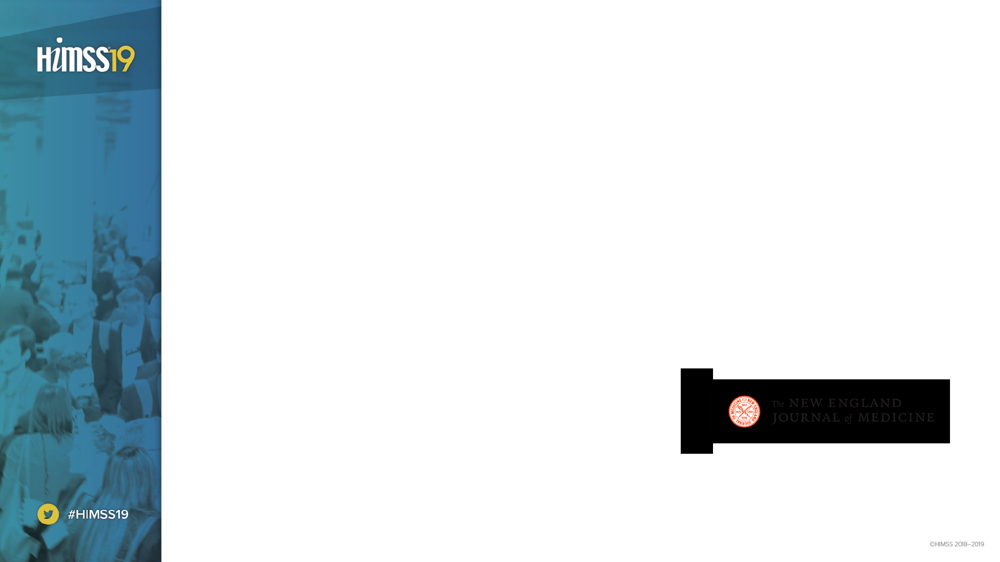
14
The new role of the academic medical center
Partners Healthcare, Massachusetts General, Brigham and Women’s Hospital. N Engl J Med. 369;11 NEJM.org 994 September 12, 2013.
“Charting our course under the current economic pressures won’t
be easy. But our AMCs have built their reputations by addressing
society’s most pressing health care challenges, and today’s
central challenge is the rising cost of health care. Fortunately,
AMCs specialize in innovation. We must now apply that capability
not just to scientific aspects of medical care but also to the
systems delivering it.”
15
How Cedars-Sinai implemented
clinical decision support
•More than 100 Choosing Wisely–based alerts
in production in the EMR
•Physician has the option to adhere, cancel,
change or justify
•Rates of adherence followed and can be linked
to outcomes
•Can we show an impact?

16
Choosing Wisely
Eliminate low performing alerts first —
reduce alert fatigue
Approximately alerts 250 per day
<2.5% of total alerts
17
Targeted alerts integrated
into physician workflow
Physician
starts order
in EHR
Likely
appropriate
Order
placed
Inappropriate order
cancelled
Likely
unnecessary
Logic
evaluates
30+
elements
Choosing Wisely:
Don’t perform population based screening for 25-OH-
Vitamin D deficiency.1,
(American Society for Clinical Pathology)
Hyperlink: Choosing Wisely –American Society for Clinical Pathology
Information for Patients: Vitamin D Tests (ASCP)
Reasons for override:
malabsorption
syndromes
meds (glucocorticoids,
antifungals, etc.)
diet excludes
dairy products
monitoring of known
vitamin D deficiency dark skin complexion see comments
Comments:
remove order keep order
1. Note: CDS alert displays using EHR’s native best practice alerts; EHR’s do not allow use of actual screenshots.
18
Reducing alert fatigue
Reduce false positives
inclusion criterion
Vitamin D test ordered
exclusion criteria
males age > 70 years OR females age > 65 years
osteomalacia, vitamin D deficiency, osteoporosis,
pathologic fracture, chronic kidney disease, intestinal
malabsorption, cirrhosis, chronic liver failure, cystic
fibrosis, inflammatory bowel disease, radiation enteritis,
unspecified non-infections colitis, bariatric surgery,
hyperparathyroidism, chronic pancreatitis, COPD,
obesity/BMI >30, sarcoidosis, tuberculosis, histoplas-
mosis, coccidiomycosis, other fungal infections,
beryliosis, malignant lymphosarcomas, other
malignant lymphomas, diabetes, history of falls
Visit related to pregnancy
Active anti-seizure, antifungal, anti-retroviral
medications, glucocorticoids, or bile acid
sequestrants
IF Lab test order = LAB535
NOT (gender = female &age >= 70 years) OR (gender = male &age >= 65 years)
NOT ICD-9 OR ICD-10 diagnosis codes
268.0, 268.1, 268.2, 268.9, 733.00, 733.01, 733.02, 733.03, 733.09, 733.10, 733.11, 733.12, 733.13, 733.14, 733.15, 733.16, 733.19, 585.1, 585.2, 585.3, 585.4, 585.5, 585.6, 585.9, 579.0, 579.1, 579.2, 579.3, 579.4,
579.8, 579.9, 571.2, 571.5, 571.6, 572.2, 572.3, 572.4, 572.8, 573.0, 573.5, 277.00, 277.01, 277.02, 277.03, 277.09, 555.0, 555.1, 555.2, 555.9, 556.0, 556.1, 556.2, 556.3, 556.4, 556.5, 556.6, 556.8, 556.9, 558.1,
558.9, V45.86, 588.0, 588.81, 252.00, 252.01, 252.02, 252.08, 577.1, 491.0, 491.1, 491.20, 491.21, 491.22, 491.8, 491.9, 492.0, 492.8, 278.00, 278.01, 278.03, 135, 010.00, 010.01, 010.02, 010.03, 010.04, 010.05,
010.06, 010.10, 010.11, 010.12, 010.13, 010.14, 010.15, 010.16, 010.80, 010.81, 010.82, 010.83, 010.84, 010.85, 010.86, 010.90, 010.91, 010.92, 010.93, 010.94, 010.95, 010.96, 011.00, 011.01, 011.02, 011.03, 011.04,
011.05, 011.06, 011.10, 011.11, 011.12, 011.13, 011.14, 011.15, 011.16, 011.20, 011.21, 011.22, 011.23, 011.24, 011.25, 011.26, 011.30, 011.31, 011.32, 011.33, 011.34, 011.35, 011.36, 011.40, 011.41, 011.42, 011.43,
011.44, 011.45, 011.46, 011.50, 011.51, 011.52, 011.53, 011.54, 011.55, 011.56, 011.60, 011.61, 011.62, 011.63, 011.64, 011.65, 011.66, 011.70, 011.71, 011.72, 011.73, 011.74, 011.75, 011.76, 011.80, 011.81, 011.82,
011.83, 011.84, 011.85, 011.86, 011.90, 011.91, 011.92, 011.93, 011.94, 011.95, 011.96, 012.00, 012.01, 012.02, 012.03, 012.04, 012.05, 012.06, 012.10, 012.11, 012.12, 012.13, 012.14, 012.15, 012.16, 012.20, 012.21,
012.22, 012.23, 012.24, 012.25, 012.26, 012.30, 012.31, 012.32, 012.33, 012.34, 012.35, 012.36, 012.80, 012.81, 012.82, 012.83, 012.84, 012.85, 012.86, 013.00, 013.01, 013.02, 013.03, 013.04, 013.05, 013.06, 013.10,
013.11, 013.12, 013.13, 013.14, 013.15, 013.16, 013.20, 013.21, 013.22, 013.23, 013.24, 013.25, 013.26, 013.30, 013.31, 013.32, 013.33, 013.34, 013.35, 013.36, 013.40, 013.41, 013.42, 013.43, 013.44, 013.45, 013.46,
013.50, 013.51, 013.52, 013.53, 013.54, 013.55, 013.56, 013.60, 013.61, 013.62, 013.63, 013.64, 013.65, 013.66, 013.80, 013.81, 013.82, 013.83, 013.84, 013.85, 013.86, 013.90, 013.91, 013.92, 013.93, 013.94, 013.95,
013.96, 014.00, 014.01, 014.02, 014.03, 014.04, 014.05, 014.06, 014.80, 014.81, 014.82, 014.83, 014.84, 014.85, 014.86, 015.00, 015.01, 015.02, 015.03, 015.04, 015.05, 015.06, 015.10, 015.11, 015.12, 015.13, 015.14,
015.15, 015.16, 015.20, 015.21, 015.22, 015.23, 015.24, 015.25, 015.26, 015.50, 015.51, 015.52, 015.53, 015.54, 015.55, 015.56, 015.60, 015.61, 015.62, 015.63, 015.64, 015.65, 015.66, 015.70, 015.71, 015.72, 015.73,
015.74, 015.75, 015.76, 015.80, 015.81, 015.82, 015.83, 015.84, 015.85, 015.86, 015.90, 015.91, 015.92, 015.93, 015.94, 015.95, 015.96, 016.00, 016.01, 016.02, 016.03, 016.04, 016.05, 016.06, 016.10, 016.11, 016.12,
016.13, 016.14, 016.15, 016.16, 016.20, 016.21, 016.22, 016.23, 016.24, 016.25, 016.26, 016.30, 016.31, 016.32, 016.33, 016.34, 016.35, 016.36, 016.40, 016.41, 016.42, 016.43, 016.44, 016.45, 016.46, 016.50, 016.51,
016.52, 016.53, 016.54, 016.55, 016.56, 016.60, 016.61, 016.62, 016.63, 016.64, 016.65, 016.66, 016.70, 016.71, 016.72, 016.73, 016.74, 016.75, 016.76, 016.90, 016.91, 016.92, 016.93, 016.94, 016.95, 016.96, 017.00,
017.01, 017.02, 017.03, 017.04, 017.05, 017.06, 017.10, 017.11, 017.12, 017.13, 017.14, 017.15, 017.16, 017.20, 017.21, 017.22, 017.23, 017.24, 017.25, 017.26, 017.30, 017.31, 017.32, 017.33, 017.34, 017.35, 017.36,
017.40, 017.41, 017.42, 017.43, 017.44, 017.45, 017.46, 017.50, 017.51, 017.52, 017.53, 017.54, 017.55, 017.56, 017.60, 017.61, 017.62, 017.63, 017.64, 017.65, 017.66, 017.70, 017.71, 017.72, 017.73, 017.74, 017.75,
017.76, 017.80, 017.81, 017.82, 017.83, 017.84, 017.85, 017.86, 017.90, 017.91, 017.92, 017.93, 017.94, 017.95, 017.96, 018.00, 018.01, 018.02, 018.03, 018.04, 018.05, 018.06, 018.80, 018.81, 018.82, 018.83, 018.84,
018.85, 018.86, 018.90, 018.91, 018.92, 018.93, 018.94, 018.95, 018.96, 115.00, 115.01, 115.02, 115.03, 115.04, 115.05, 115.09, 115.10, 115.11, 115.12, 115.13, 115.14, 115.15, 115.19, 115.90, 115.91, 115.92, 115.93,
115.94, 115.95, 115.99, 117.0, 117.1, 117.2, 117.3, 117.4, 117.5, 117.6, 117.7, 117.8, 117.9, 007.2, 503, 200.00, 200.01, 200.02, 200.03, 200.04, 200.05, 200.06, 200.07, 200.08, 200.10, 200.11, 200.12, 200.13,
200.14, 200.15, 200.16, 200.17, 200.18, 200.20, 200.21, 200.22, 200.23, 200.24, 200.25, 200.26, 200.27, 200.28, 200.30, 200.31, 200.32, 200.33, 200.34, 200.35, 200.36, 200.37, 200.38, 200.40, 200.41, 200.42, 200.43,
200.44, 200.45, 200.46, 200.47, 200.48, 200.50, 200.51, 200.52, 200.53, 200.54, 200.55, 200.56, 200.57, 200.58, 200.60, 200.61, 200.62, 200.63, 200.64, 200.65, 200.66, 200.67, 200.68, 200.70, 200.71, 200.72, 200.73,
200.74, 200.75, 200.76, 200.77, 200.78, 200.80, 200.81, 200.82, 200.83, 200.84, 200.85, 200.86, 200.87, 200.88, 201.00, 201.01, 201.02, 201.03, 201.04, 201.05, 201.06, 201.07, 201.08, 201.10, 201.11, 201.12, 201.13,
201.14, 201.15, 201.16, 201.17, 201.18, 201.20, 201.21, 201.22, 201.23, 201.24, 201.25, 201.26, 201.27, 201.28, 201.40, 201.41, 201.42, 201.43, 201.44, 201.45, 201.46, 201.47, 201.48, 201.50, 201.51, 201.52, 201.53,
201.54, 201.55, 201.56, 201.57, 201.58, 201.60, 201.61, 201.62, 201.63, 201.64, 201.65, 201.66, 201.67, 201.68, 201.70, 201.71, 201.72, 201.73, 201.74, 201.75, 201.76, 201.77, 201.78, 201.90, 201.91, 201.92, 201.93,
201.94, 201.95, 201.96, 201.97, 201.98, 202.00, 202.01, 202.02, 202.03, 202.04, 202.05, 202.06, 202.07, 202.08, 202.10, 202.11, 202.12, 202.13, 202.14, 202.15, 202.16, 202.17, 202.18, 202.20, 202.21, 202.22, 202.23,
202.24, 202.25, 202.26, 202.27, 202.28, 202.30, 202.31, 202.32, 202.33, 202.34, 202.35, 202.36, 202.37, 202.38, 202.40, 202.41, 202.42, 202.43, 202.44, 202.45, 202.46, 202.47, 202.48, 202.50, 202.51, 202.52, 202.53,
202.54, 202.55, 202.56, 202.57, 202.58, 202.60, 202.61, 202.62, 202.63, 202.64, 202.65, 202.66, 202.67, 202.68, 202.70, 202.71, 202.72, 202.73, 202.74, 202.75, 202.76, 202.77, 202.78, 202.80, 202.81, 202.82, 202.83,
202.84, 202.85, 202.86, 202.87, 202.88, 202.90, 202.91, 202.92, 202.93, 202.94, 202.95, 202.96, 202.97, 202.98, 249.00, 249.01, 249.10, 249.11, 249.20, 249.21, 249.30, 249.31, 249.40, 249.41, 249.50, 249.51, 249.60,
249.61, 249.70, 249.71, 249.80, 249.81, 249.90, 249.91, 250.00, 250.01, 250.02, 250.03, 250.10, 250.11, 250.12, 250.13, 250.20, 250.21, 250.22, 250.23, 250.30, 250.31, 250.32, 250.33, 250.40, 250.41, 250.42, 250.43,
250.50, 250.51, 250.52, 250.53, 250.60, 250.61, 250.62, 250.63, 250.70, 250.71, 250.72, 250.73, 250.80, 250.81, 250.82, 250.83, 250.90, 250.91, 250.92, 250.93, 042, V22.0, V22.1, V22.2, V23.0, V23.1, V23.2, V23.3,
V23.41, V23.42, V23.49, V23.5, V23.7, V23.81, V23.82, V23.83, V23.84, V23.85, V23.86, V23.87, V23.89, V23.9, V15.88, E885.9, E888.0, E888.1, E888.8, E888.9
NOT medication orders
10440, 10441, 10443, 10444, 10445, 10446, 10447, 10448, , 10011, 10012, 10013, 10879, , 10015, 10016, 10017, 10018, , 3910, , 11074
NOT BMI > 30 kg/m2
THEN fire Best Practice Advisory with 11 override reasons
CLINICAL LOGIC TRANSLATION
Choosing Wisely:
“Don’t perform population based screening for 25-OH-Vitamin D deficiency”
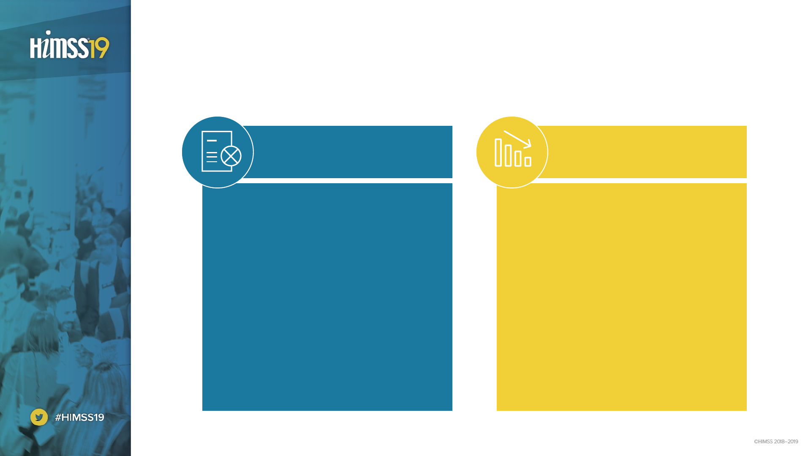
19
Measuring impact
If you trigger the same alert 10
times, do you order and cancel or
anticipate the alert?
If you have already explained the
test/procedure to the patient, do
you cancel or wait and not order
the next time?
Does not account for reduction
of inappropriate care
Cancelled orders
Inappropriate orders avoided
Adjusted ordering rates
Reduced rate
of inappropriate orders
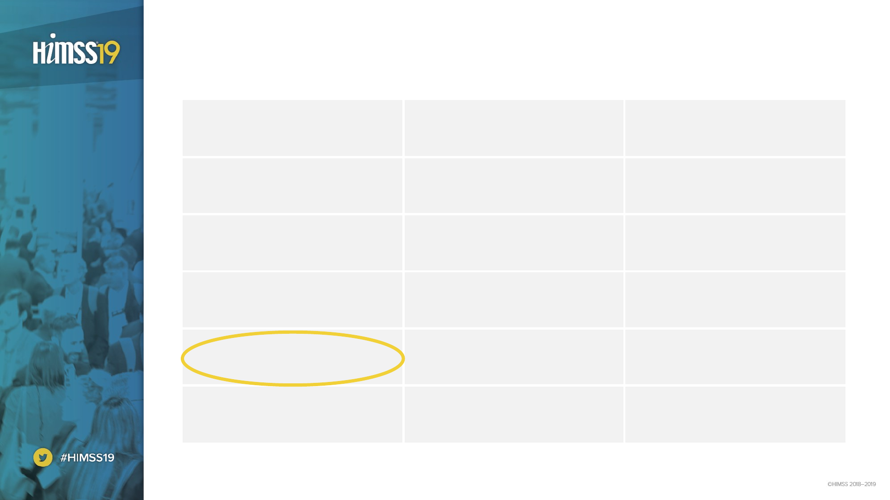
20
Choosing Wisely alerts used during study
Antipsychotics for
insomnia in adults
Cardiac imaging for chest pain
patients at low risk Lyme disease testing
Antipsychotics in
dementia patients
Carotid artery imaging
for simple syncope*
NSAIDS in hypertension heart
failure or CKD patients*
Appetite stimulants
in older adults Chest X-ray at regular intervalsRepeat ultrasound for DVT
Benzodiazepines and sedatives
for patients older than 65
CT angio for pulmonary
embolism in young women*
Routine 25-OH-Vitamin D
deficiency screening
Blood transfusion in patients
with Hgb greater than 7 g/dL*Erythropoiesis stimulating agents Stress ulcer prophylaxis
medications for low-risk patients*
Brain imaging for simple syncope Imaging for pulmonary embolism
when pre-test risk is low*T3 levels in hypothyroid patients*
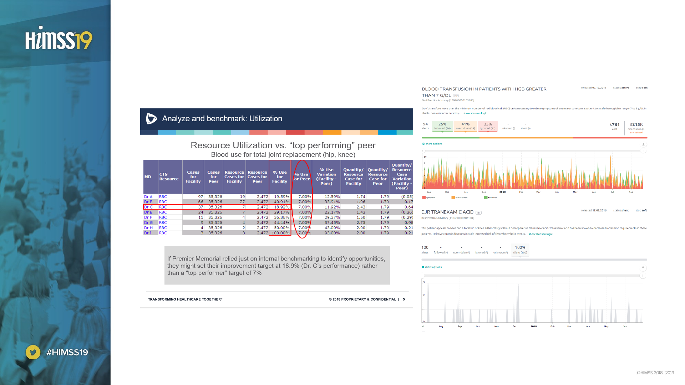
21
Appropriate blood utilization
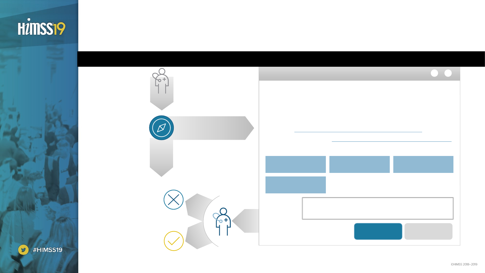
22
Physician
starts order
in EHR
Likely
appropriate
Order
placed
Inappropriate order
cancelled
Likely
unnecessary
Choosing Wisely:
Don’t transfuse more units of blood than absolutely
necessary.
(Society for Hospital Medicine)1, 2, 3
Hyperlink: Choosing Wisely –Society of Hospital Medicine
Information for Patients: Blood Transfusion for Anemia in the Hospital
Reasons for override:
Active blood loss Hemoglobinopathy Subarachnoid
hemorrhage
Chemotherapy
Comments:
remove order keep order
Don’t routinely transfuse stable, asymptomatic hospitalized patients with a hemoglobin level greater than
7–8 grams. Multiple factors need to be considered in transfusion decisions, including the patient’s clinical status and oxygen delivery
ability. Arbitrary hemoglobin or hematocrit thresholds should not be used as the only criterion for transfusions of packed red blood cells.
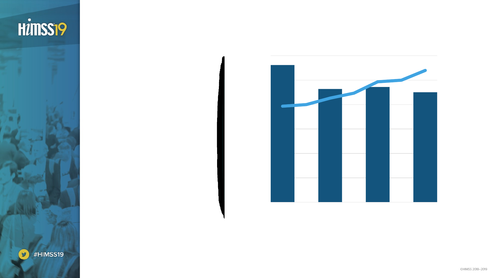
23
1
1.1
1.2
1.3
1.4
1.5
1.6
1.7
1.8
1.9
0
1000
2000
3000
4000
5000
6000
2012 2013 2014 2015
Case Mix Index
Crimson reported blood transfusions(pRBC units)
*
**
23
17% reduction
in blood utilization
while CMI increased
by 14%
* 2015 is projected from six months of data
** 2015 Case Mix Index (CMI) value is from January–June data
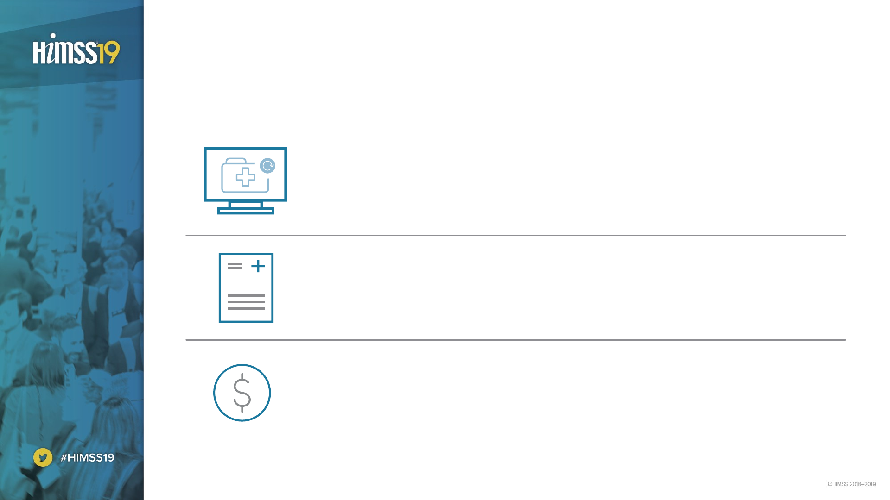
24
Sources of data
Study drew from three data sources
Data sent from the EHR to the CDS analytics platform
Data included the category of the provider triggering the alert (e.g., resident,
attending) and clinical data allowing for the assessment of adherence or non-
adherence to the alert during the encounter.
Claims data
Data included patient demographics (e.g., age, gender), diagnoses, services
provided, admit and discharge dates, Medicare Severity-Diagnosis Related
Group codes and costs.
Direct cost data associated with the patient care department.
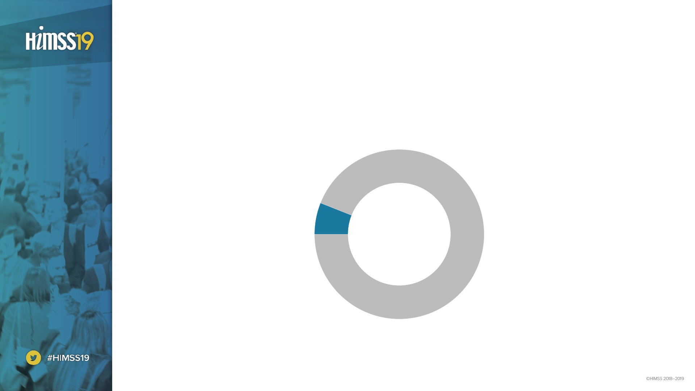
25
Study population
26,424 encounters were included in the analysis
from of a total of approximately 100,000 encounters.
Adherent
encounters
Of the total encounters,
6% (1,591) of providers
adhered to all alerts.
Nonadherent
encounters
The remaining encounters
represent 94% (24,833) of
providers who did not adhere
to any alerts.
26,424
total encounters
6%
94%
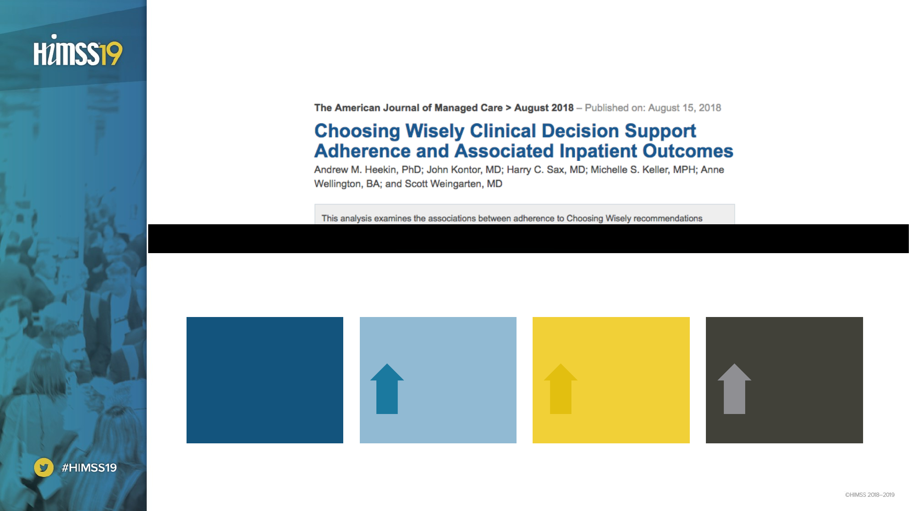
26
Clinical and financial outcomes
Patients whose physicians did not follow the Stanson Health
Choosing Wisely recommendations compared to those who did:
Odds of
complications
29%
Cost per
patient episode
6.2%
0.06 days
30-day
readmissions
14%
not statistically significant
Source: Median cost of encounter $12,940. Am J Manag Care. 2018;24(8):294-299.
Length of stay
7.3%
after adjusting for patient
illness severity and case
complexity
($944 per patient)
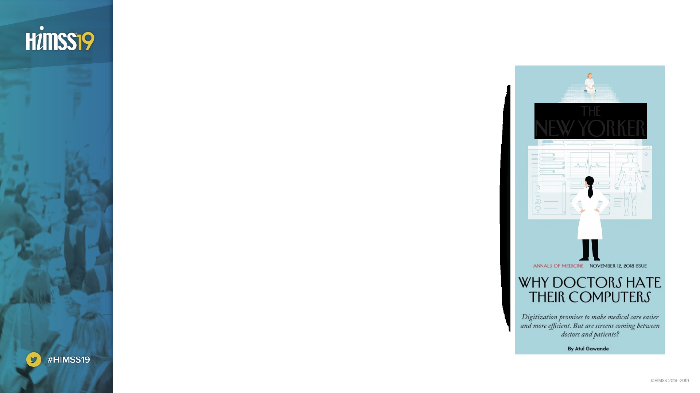
27
CDS approach
All CDS, whether alert, pathway, guideline, will:
•Be cloud-based
•Be more like Google
•Not require indications lists
•Have NLP, NLU, ML, AI capabilities
•Read and interpret free text
•Lower false-positive rates
•Measurable impact on quality and costs
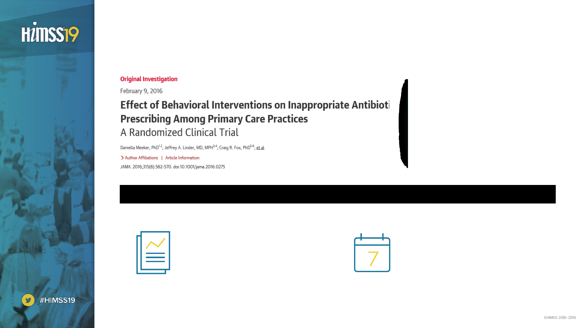
28
Potential interventions
•Peer-comparison feedback
•Randomized controlled trial
•Low value care —antibiotics
for URIs:
–248 providers
–14,753 patient visits
Results
•Control:
24.1% to 13.1%
•Peer-comparison feedback:
19.9% to 3.7%, p<0.001
1 year later
•Drift
•Peer-comparison feedback
still has some impact
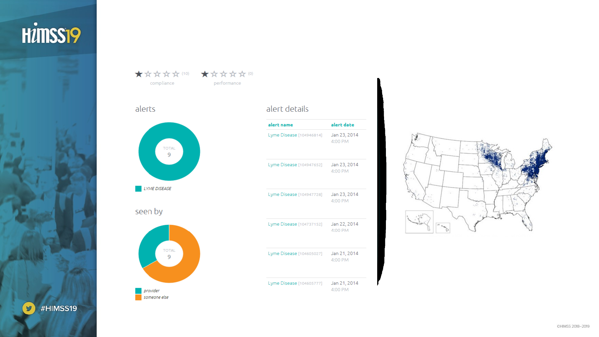
29
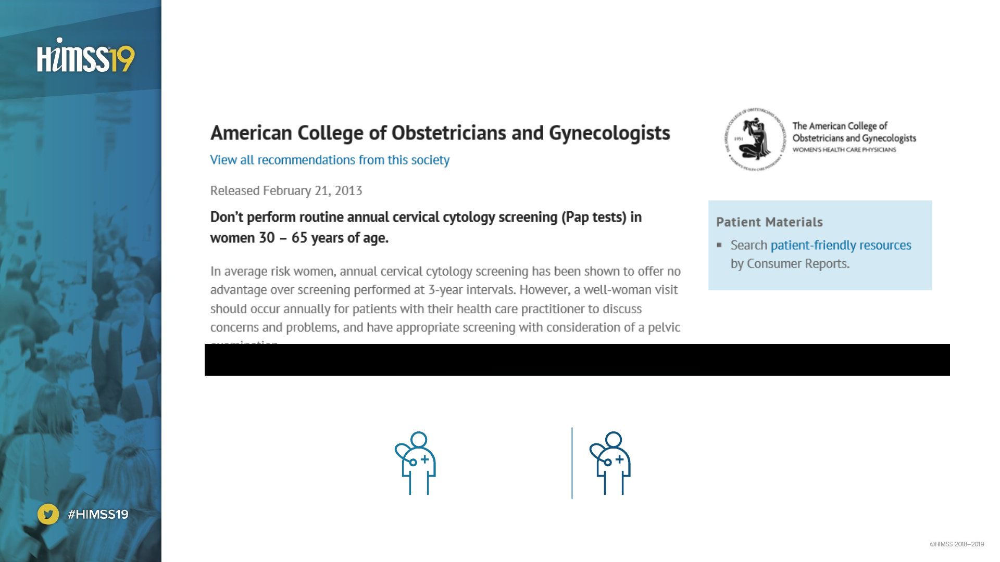
30
PAP smears
Percentage of potentially low-value care (n=47)
Physician 1
62%
Physician 2
5%
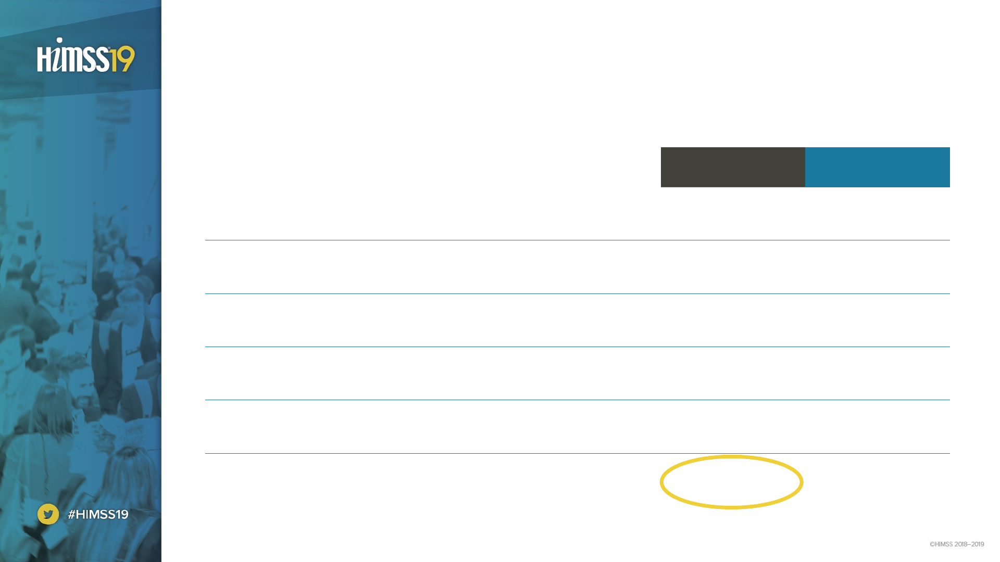
31
Impact of CDS
Peer-comparison feedback
Order volume Alert firings
Cardiac imaging for screening low
-risk asymptomatic patients
AND annual stress testing after coronary revascularization
0.8% ↓12.0% ↓
Creatine kinase
21.0% ↓39.9% ↓
Lipoprotein (a)
54.5% ↓49.0% ↓
Apolipoprotein B
57.2% ↓58.9% ↓
Homocysteine
1.3% ↑14.5% ↑
Lab bundle
25.4% ↓42.0% ↓
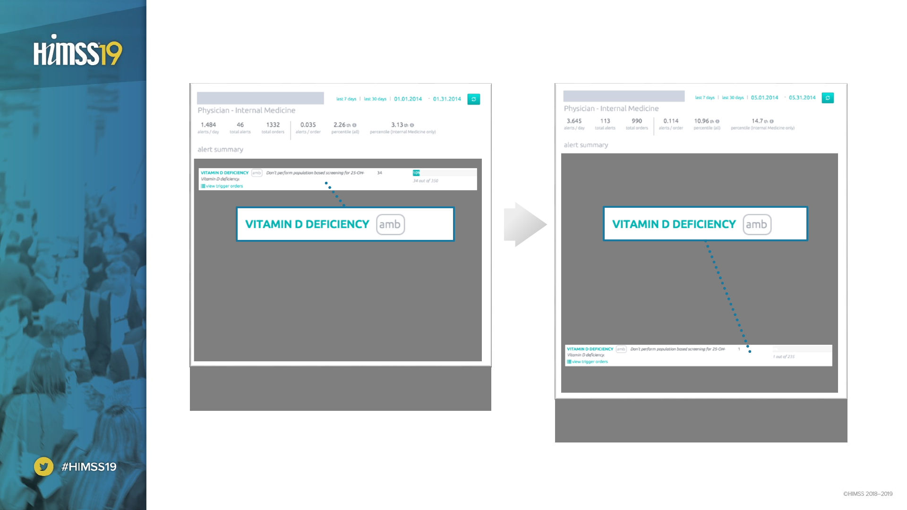
32
Inappropriate vitamin-d screenings —BEFORE
January 2014
34
Inappropriate vitamin-d screenings —AFTER
May 2014
1
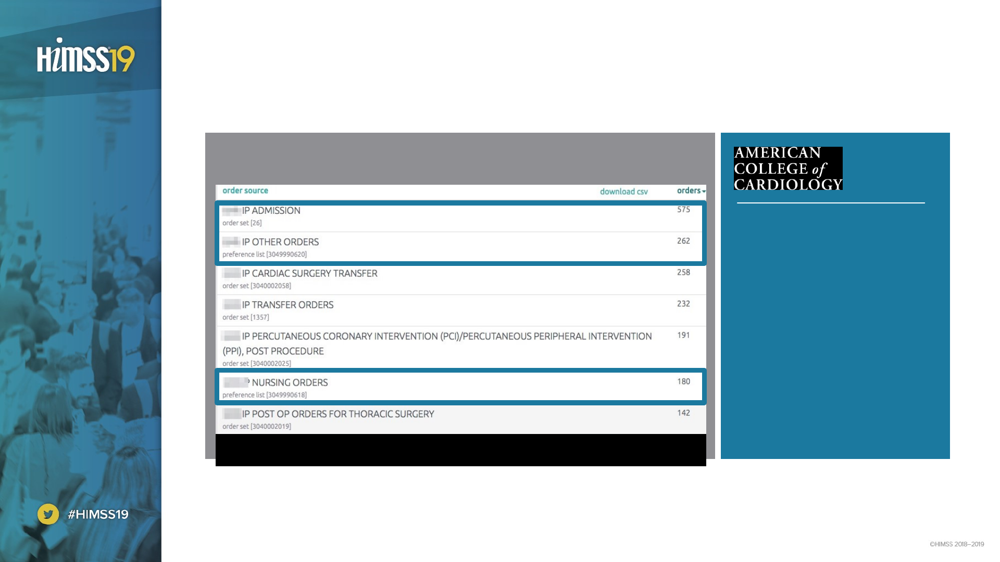
33
Order sets and preference lists
Standards for Inpatient
Electrocardiographic Monitoring
$3.7M
annualized savings
“hard green”
1. Identified cardiac monitoring/
telemetry in order sets and
preference lists
2. Utilized BPAs to guide practice
3. No change in mortality, rapid
response calls or code blues
TELEMETRY MONITORING
Source: Update to Practice Standards for Electrocardiographic Monitoring in Hospital Settings: A Scientific Statement From the American Heart Association. Circulation. 2017;Oct 3:[Epub ahead of print].
O C T 0 4 , 2 0 1 7
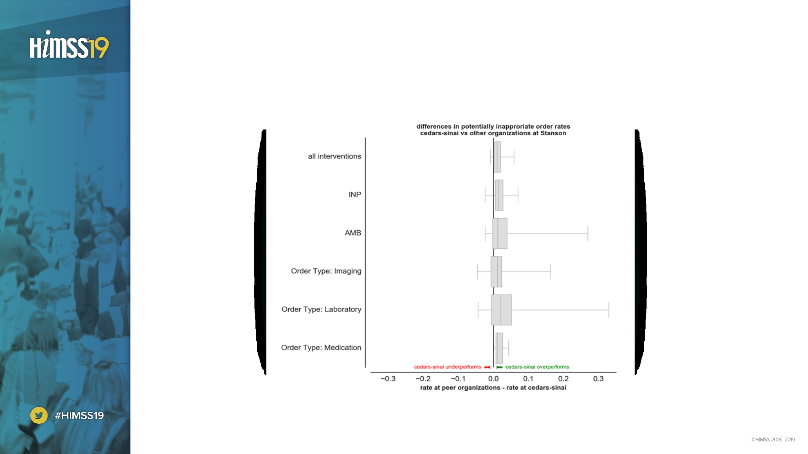
34
Inappropriate care
Cedars-Sinai: Best 20th percentile (n=25 organizations)
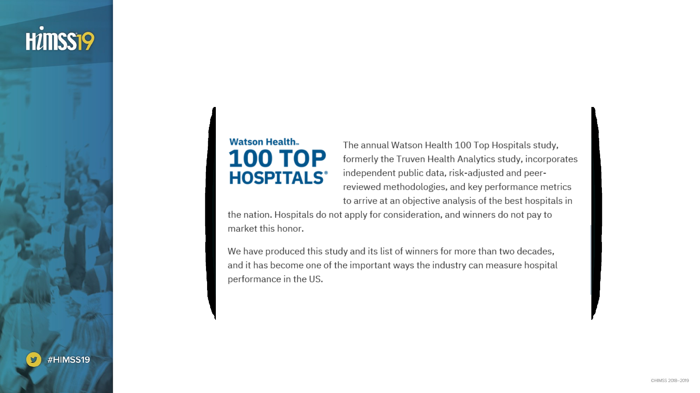
35
Medical center results
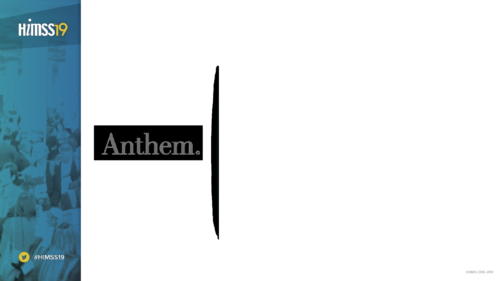
36
Medical network results
Performance Year 3: 2015
•12,989 patients
•Severity score 2.16 (average 1.28)
•Total saved $10,656,000
•21% reduction in inpatient utilization
•15% reduction in medications/1,000
•6% reduction in imaging/1,000
•# 1 Anthem ACO for savings
Performance Year 4: 2016
(Preliminary 10/1/15–9/30/16)
•Total saved $2,200,000
ACO
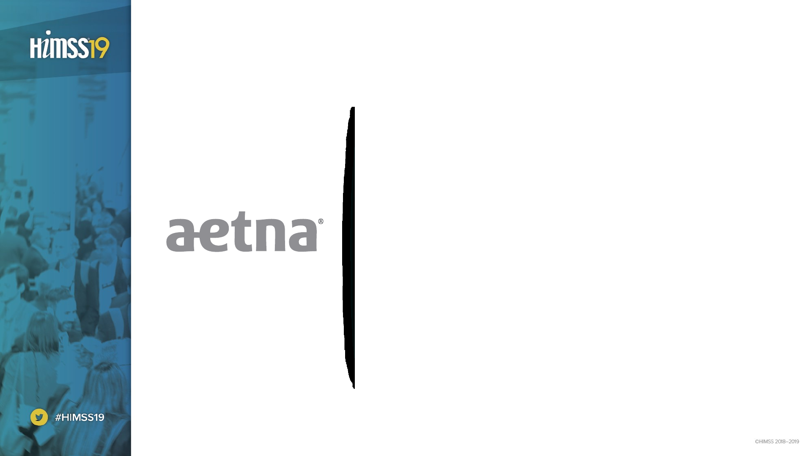
37
Medical network results
ACO
Savings
IHA 2015 Commercial HMO Results
•8.4% reduction in costs for CSMG
•5.8% reduction in costs for CSHA
•6th best out of 200 California physician
groups in cost reduction
•15th best out of 200 California physician
groups in cost reduction
38
Expanded applications
of CDS-enabled care
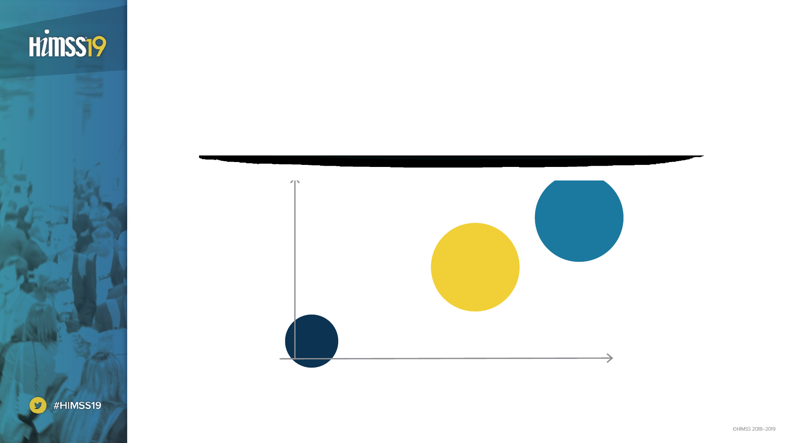
39
Considering zone of innovation
BREADTH OF CDS APPLIED
CARE
DECISIONS
IMPACTED
Alerts Order sets Dynamic forms,
displays
Expanded
orchestration
Single
decision
Multiple
decisions
Episodic care
pathways
Choosing Wisely
alerts
Prior
authorization
Potential impact of clinical decision support care adaptive pathways providing
patient-specific guidance across clinical decision support intervention types,
highlight use cases for:
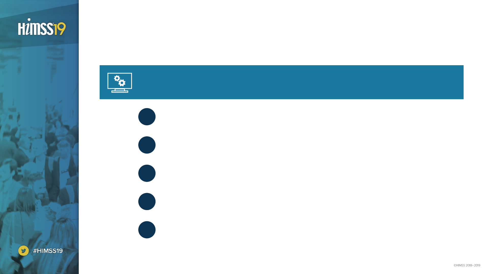
40
Care pathways move beyond alerts and
rules to dynamically impact patient care
Vision: A patient-specific orchestration of evidence-based clinical decision support,
delivered in concert to a multidisciplinary care team across the patient episode.
Behind-the-scenes logic drives interventions
of all types, presented in EHR workflow
11
Care pathway is condition and patient-specific
22
Logic continuously tracks a patient’s progression
and adherence to its specific care plan
33
Analytics track adherence and pathway impact
44
Care pathway is easier to maintain and able to evolve
55
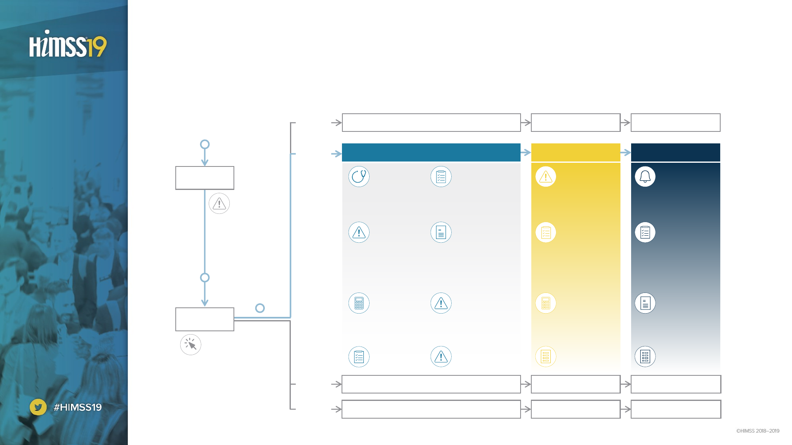
41
Behind the scenes algorithms dictate
available actions to the care team
Mark, 65-year-old male with heart
failure presents to emergency
department with acute exacerbation
Eligibility
check
Admitting physician
clicks “yes” to heart
failure pathway
Stage C
HFrEF
Stratification
and transfer
to IP
Management Post discharge
Decision
to admit
Discharge
Stage B Management Post dischargeDischarge
Management Post dischargeDischarge
Stage A
1. Relevant if not administered in ED.
2. Intended as example, doc templates to be
developed for multiple care team members.
Surveillance algorithm
(Dx Hx, lab results,
med Hx) alerts ED
physician of Mark’s
eligibility for HF care
Prompt
Enrollment
button
Nurse prompted to
administer diuretics
< 6 hrs1
Rx alert
Includes Nurse
Navigator instructions
re: diet, meds, follow-
up, weight, etc.
Documentation
template2
Auto-updates with
Hospitalist referral
to OP cardiac rehab
Task list
Reminds Nurse
Navigator to complete
follow-up call; clinical
visit summary sent
to PCP
Task list
Flags nurse that daily
weight has increased
Adverse
trend alert
Predicts discharge
disposition to “home”
Risk
calculator
Predicts readmission
risk and drives checklist
Risk
calculator
Nurse Navigator
documents follow-up
Doc
template
Order set
end alert Smart form Smart form
Task list
IP attending orders
diagnostic, meds,
consult
Order set Task list
Pre-populates Mark
as smoker; triggers
cessation education
Prompts hospitalist
to order appropriate
discharge prescriptions
Rx alert Portal
reminder
Patient reminder for
follow-up cardiology
appointment
Stage D Post dischargeDischargeManagement
Enrollment
Care pathways are invisible to clinicians by guiding actions through expertly designed CDS
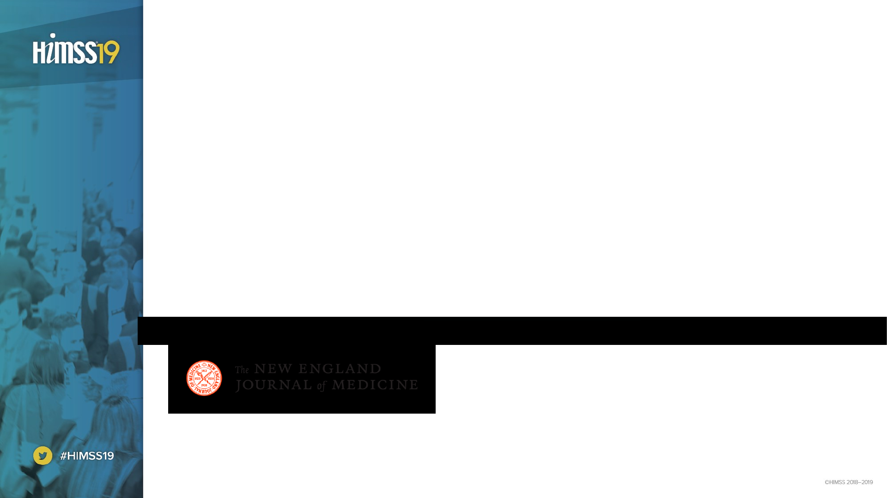
42
The next 100 years of medicine
“Complex but empirically validated algorithms will be embedded in
EHR systems as decision support tools to assist in everyday patient care.
Those management algorithms will evolve and be modified continuously
in accordance with inputs from ongoing clinical observations and from
new research. Clinical decision support algorithms will be derived entirely
from data, not expert opinion, market incentives, or committee consensus.”
December 27, 2012
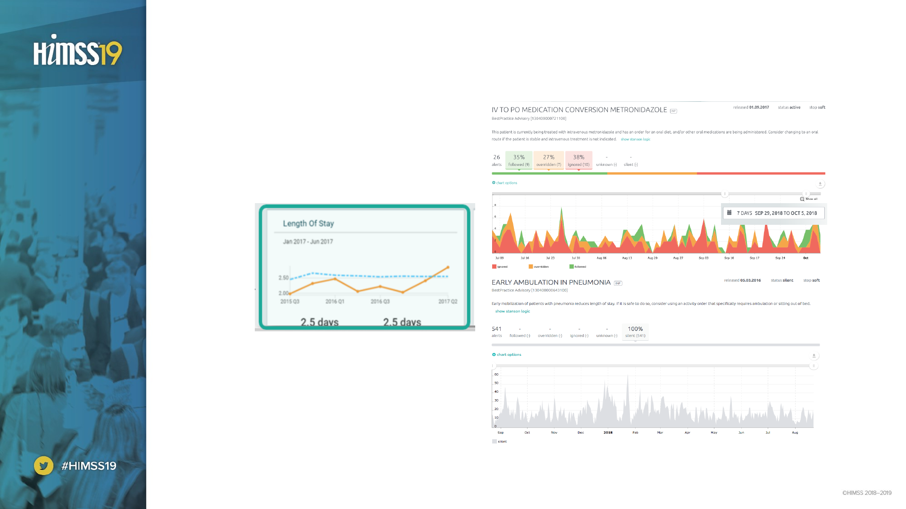
43
Means to an end
44
Clinical Decision Support of the future
Mrs. Smith is a 64-year-old woman
with hypertension and diabetes.
Based upon her symptoms, genetic profile,
microbiome information, laboratory values,
personal preferences, vital signs, social
determinants …

45
After review of CDS …
Clinical Decision Support of the future
What is the optimal treatment
and monitoring of Mrs. Smith’s
hypertension and diabetes?
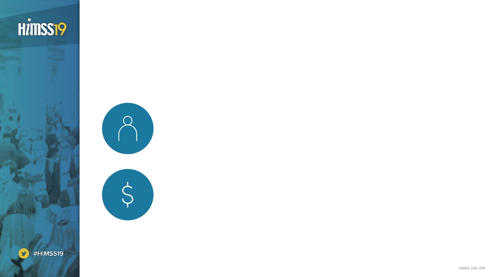
46
Opportunity
During the hour we spend together today:
Approximately 28 deaths in the U.S.
might occur because of medical errors
$22 million could be spent on medical over-treatment
47
Delivering value
“Of course it’s hard. It’s supposed to be
hard. If it were easy, everybody would
do it. Hard is what makes it great.”
Source: Wikipedia.com
48
Please remember to you complete our online session evaluation.
Thank you.
Thank you and questions
John Kontor, MD
Practice Lead
Provider Technology Services
Optum Advisory Services
kontorj@advisory.com
@johnkontor
Scott Weingarten, MD, MPH
Consultant to the CEO
Cedars-Sinai Health System
Professor of Medicine
scott.weingarten@cshs.org